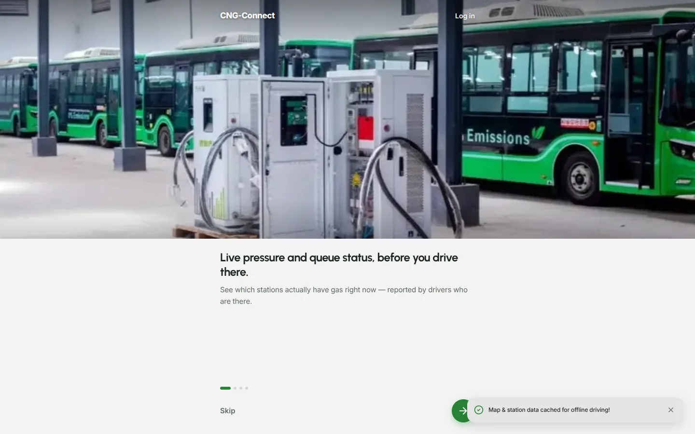
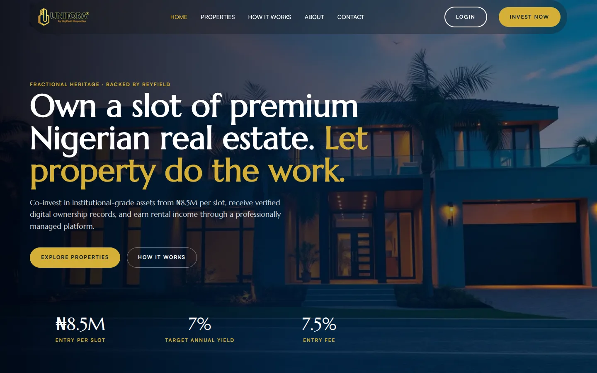

Helping drivers find gas before they join the queue
A live map and driver community for Nigerians switching their cars to compressed natural gas.
- Role
- Founder, designer, and developer
- Platform
- Web and mobile web
- Coverage
- 90 stations, 28 states

Goal
Give drivers live, trustworthy station status, and keep crowdsourced data fresh when there are far more stations than reporters.
Context
Drivers converting to CNG queue for hours every day without knowing which stations have gas. The WhatsApp groups meant to help are full of false reports. I conceived, designed, and built CNG-Connect to answer that.
Outcome
Live with 90 geocoded stations across 28 states and a directory of 451 accredited conversion centres.
Process
Drivers were queueing on rumours
18
WhatsApp groups sharing gas updates in one city
200–700
members in each group, with no way to tell true reports from false ones
- 01
Listening to drivers
I spoke with drivers of CNG cars. Most went out daily and queued for hours without reliable information on which stations had gas.
- 02
Looking at what they already used
Drivers had formed WhatsApp groups to share updates, but much of what was posted was false. People drove around the city unsure where to get gas or whom to trust.
- 03
First attempt: ask the stations
We visited station managers and asked them to post availability to drivers on WhatsApp. Updates were inconsistent, and some managers were unwilling to take part.
- 04
What changed
Relying on managers or group chats would not give drivers information they could trust. CNG-Connect puts reports in the hands of drivers at the pump, on one live map, and asks for new reports where the data is oldest.
Constraints
Solo build. Research, design, and engineering by one person.
Inaccurate location data. Existing station locations could not be trusted and had to be geocoded.
Low buy-in from stations. Managers initially did not understand what the project was for.
Design
Where can I fill up right now?
The app is built around the one question drivers ask on the road.
Drivers report pressure and queue status in a couple of taps, which keeps the map useful for everyone else.
Compares the government conversion grant with a private kit and shows the payback period and yearly savings.
451 accredited workshops, searchable by state, LGA, or centre code, with appointment booking.
A forum for maintenance, parts, and deals, plus an AI guide for quick questions about CNG.
Build
React and TypeScript on Supabase
A React and TypeScript front end on Supabase, with serverless functions for sign-in and the AI guide.
Station reports sync to every open map through Supabase realtime subscriptions, with row-level security on the data.
Sign-in by one-time code over SMS, with a 60-second cooldown per number.
Station data is cached on the device, and the app tells drivers when they're offline instead of failing silently.
Key decisions
Choices that shaped the product
-
1
Ask for reports where the data is oldest
PROBLEM
Crowdsourced status goes stale fast, and most drivers only open the app when they need gas.
DECISION
When a driver comes within 800 m of a station with an outdated status, the app asks them to report on it.
RESULT
Fresh reports are requested exactly where the map is least reliable.
-
2
Rate-limit sign-in codes
PROBLEM
Every SMS code costs money, and a script could drain the SMS balance in minutes.
DECISION
A 60-second cooldown per phone number, returned as a proper "too many requests" error.
RESULT
Sign-in stays cheap to run and resistant to abuse.
-
3
Test the parts that must not break
PROBLEM
Sign-in, permissions, and proximity alerts are hard to check by hand on every change.
DECISION
Wrote 39 unit tests covering OTP services, the proximity alert engine, permissions, and phone validation.
RESULT
Changes ship with confidence, and the TypeScript build runs strict checks.
Result
CNG-Connect is live and open for drivers to use. It's also where I push my own product thinking furthest, from the idea to a tested, deployed app.
Next case study →
Unitora
Making property investment feel as safe as a bank.
